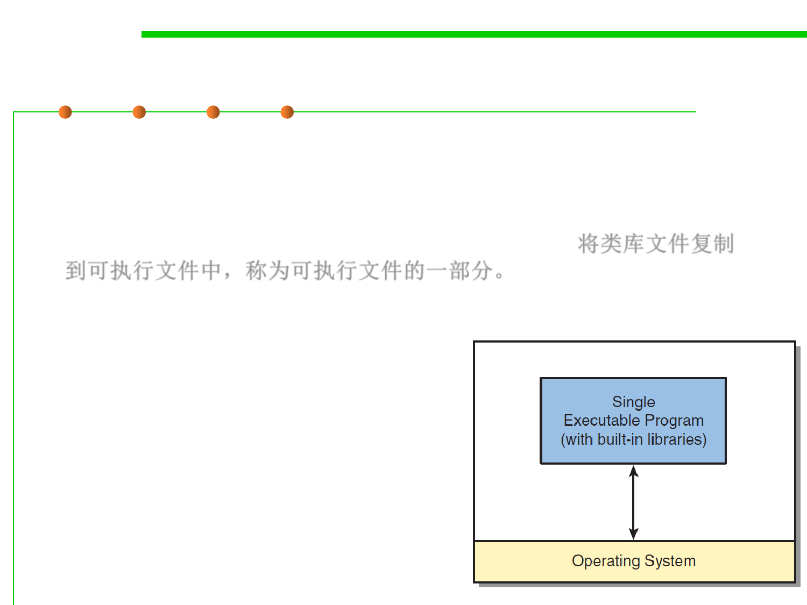

Static linking
1.1 Multi-Dimensional Views of Software Construction
▪ In static linking, a library is a collection of individual object files.
▪ During the build process, when the linker tool determines that a
function is required, it extracts the appropriate object file from the
library and copies it into the executable program. 将类库文件复制
到可执行文件中，称为可执行文件的一部分。
– The library’s object file appears identical to any of the object files the
developer created on his or her own.
▪ Static linking happens in build time ---
The act of linking a library with the
developer’s own software happens
during the build process.
– End up with a single executable program
to be loaded onto the target machine.
– After the final executable program has
been created, it’s impossible to separate
the program from its libraries.